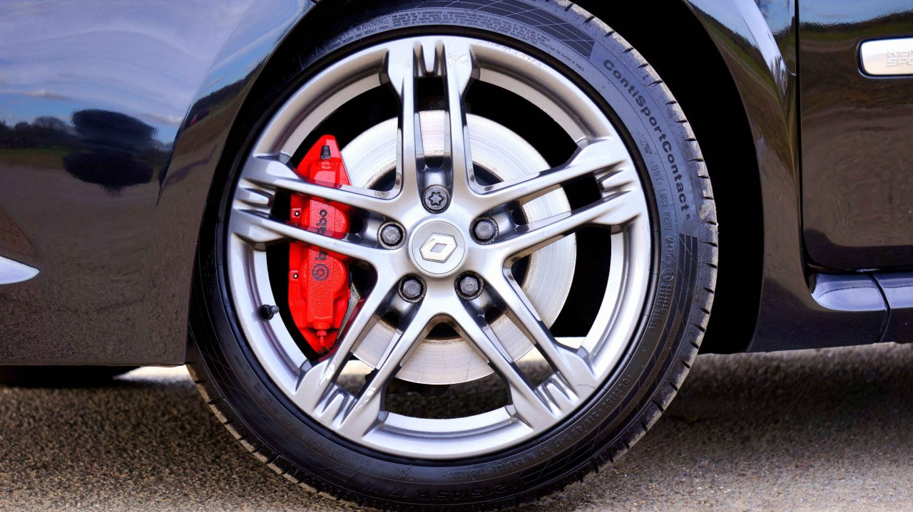

Home / Brakes
How to Change Brake Pads Yourself: Step-by-Step Guide
Quick answer
Loosen the lug nuts, raise the car on jack stands, remove the wheel, unbolt the caliper, swap the pads, wind back the piston, refit everything to the correct torque and pump the brake pedal before driving. Replace pads on both wheels of an axle, and have a professional help if you aren't confident. Brakes are a safety system.

I never rush a brake job just because the old pads look easy to remove. I compare the new pads with the old ones before fitting them and check that the caliper slide moves freely. I've seen uneven pad wear caused by sticking slide pins, so I check them every time, even when everything looks fine at first glance.
Before you start
Changing pads is a common DIY job, but it affects your ability to stop, so take your time. First confirm the pads need replacing. Thin pads, squealing or a wear warning light are the usual signs. If you hear metal-on-metal, read Grinding Noise When Braking because the rotors may need replacing too. See Brake Pads vs Rotors for how to decide.
Safety note. Use rated jack stands on level ground. Never work under or near a car held only by a jack. Never get brake dust on your skin or breathe it in, so wear gloves and a mask.
Tools and parts
| Item | Why you need it |
|---|---|
| New brake pads (and clips or shims) | Correct set for your car, front or rear |
| Jack, jack stands, wheel chocks | Safe lifting and support |
| Socket set, torque wrench | For caliper bolts and lug nuts |
| C-clamp or piston tool | To push the piston back |
| Brake cleaner and brush | Clean the caliper and bracket |
| Brake grease | Slide pins and contact points only |
| Wire or hook | To hang the caliper without straining the hose |
How to change brake pads, step by step
- Park on level ground, parking brake on (front wheel job), and chock the rear wheels. Loosen the lug nuts slightly.
- Raise the car, support it on jack stands and remove the wheel.
- Look at the caliper. Remove the guide pin bolts or the bolts that hold the caliper to the bracket.
- Lift the caliper off the rotor and hang it from the suspension with wire. Don't let it hang by the brake hose.
- Remove the old pads and note how clips, shims and springs sit. Take a photo.
- Inspect the rotor for deep grooves, a lip or cracks. Check the rubber boots and hose.
- Clean the caliper bracket and slide pins. Apply a thin film of brake grease only where recommended.
- Slowly push the piston back with a C-clamp or tool. Watch the brake fluid level in the reservoir, as it rises.
- Fit the new pads and clips, refit the caliper and tighten bolts to the torque in your manual.
- Refit the wheel and lower the car. Tighten the lug nuts in a star pattern to the correct torque. See How to Tighten Lug Nuts Properly.
- Before moving, press the brake pedal several times until it feels firm.
Rear brakes and electronic parking brakes
Some rear calipers need to be wound back with a special tool, and many cars with an electronic parking brake need it put into service mode with a scan tool before the piston can be retracted. Forcing the piston can damage the mechanism, so follow your manual or have a professional do the rear pads.
Bedding in and testing
- Test the brakes at low speed in a quiet area before driving normally.
- Follow the pad manufacturer's bedding-in procedure, which usually involves a series of moderate stops.
- Avoid hard stops for the first few hundred kilometers.
- Re-check lug nut torque after a short drive.
- Check fluid level and look for leaks.
Common mistakes
- Changing pads on one wheel only
- Skipping the torque wrench
- Greasing the pad friction surface
- Letting the caliper hang by the hose
- Ignoring worn rotors, which cause noise and vibration, as described in Why Do My Brakes Vibrate When Braking?
- Not bleeding or checking fluid when the pedal feels soft. See Spongy Brake Pedal
New pads can still make noise at first; see Brakes Squealing After New Pads?
FAQ
How long does it take to change brake pads?
Roughly one to two hours for a first-timer on one axle, depending on the car and the condition of the parts.
Do I need to replace rotors when changing pads?
Not always. If the rotors are within spec and smooth, they can stay. Worn, scored or warped ones should be replaced.
Should I change pads on both sides?
Yes. Always replace pads on both wheels of the same axle.
Do I need to bleed the brakes after changing pads?
Usually not, if you don't open the hydraulic system. Check the fluid level and pedal feel.
When should I not do this myself?
If you're unsure about lifting safely, the car has an electronic parking brake or you can't torque parts correctly, use a professional.
This guide is general information based on personal experience, not professional advice. Check your own vehicle's manual for exact specs and read the disclaimer before starting any job.